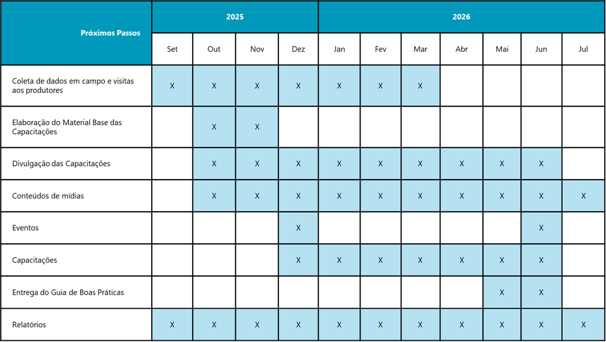

Capacitação
Serão realizadas 8 oficinas presenciais com 300 vagas no total, com duração de 5 horas (3h teóricas e 2h práticas).
Locais e datas
Em breve.
Etapas do projeto
- Levantamento de dados
- Análise de necessidades
- Logística e infraestrutura
Cronograma

Inscrições em breve